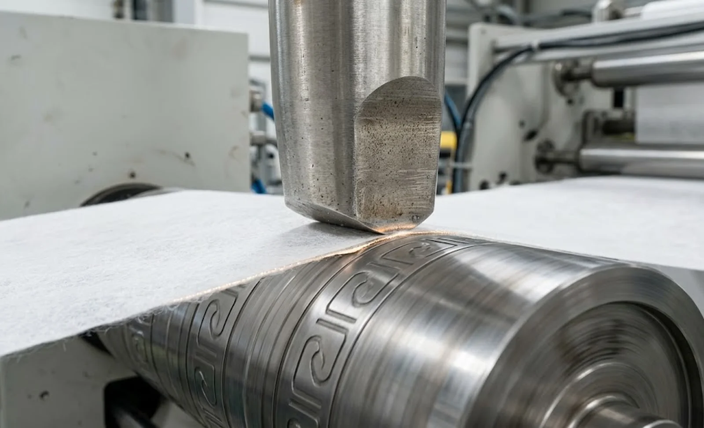

Published October 12, 2026 | By HDPTH Technical Editorial Team

Most nonwoven slitting methods leave the edge open. A shear blade separates fibers mechanically, a razor pulls through them, and both leave cut fiber ends that shed, fuzz or unravel on bulky spunlace and thermally bonded webs. Ultrasonic slitting takes a different route: instead of separating fibers, it melts them together at the cut line. The horn presses the web against the anvil, the vibration converts to heat only where fibers touch metal, and the web separates through its own melt — so the edge leaving the station is fused, sealed and essentially lint-free. Compared with the mechanical methods in our razor, shear and score guide, that sealed edge is the entire commercial argument. This guide explains where the technology fits and what to check before you order a deck of horns.
Where ultrasonic slitting earns its place
The technology belongs where the edge carries value. Wipes converted on lines like our spunlace slitting and rewinding machine must not lint into a customer’s hands or their cleaning surface, so a fused edge is a product feature, not a nice-to-have. Medical gowns and drapes need cut edges that will not unravel in the sterile field. Filter media, as discussed in our filter media guide, treats loose fibers as a defect. In all three cases the alternative is mechanical slitting plus a secondary edge-sealing step, and eliminating that step — with its extra handling and registration problems — is usually what pays for the ultrasonic hardware. On commodity webs where an open edge is acceptable, the economics reverse and shear stays cheaper per lane.
The fiber question decides feasibility
Ultrasonic bonding needs something to bond. Polypropylene and polyester spunbonds, spunbond-meltblown composites, thermally calendered carded webs and bicomponent fibers all fuse readily. High-viscose or cotton-rich spunlace has little thermoplastic content, so the horn produces heat but the web has nothing to melt — the edge stays weak, ragged or both. Blend percentage matters as much as fiber type: a spunlace with 30% PP often seals acceptably where a pure cellulose web will not. This is why no responsible supplier will promise results from a datasheet alone; the structured material trial approach in our material trial guide exists precisely for this decision. Bring your actual web, in the basis weight you run, and measure the sealed edge’s peel or burst strength before trusting the method.
Lane count, power and speed: the real constraints
Every ultrasonic lane needs a horn, a matched generator and an anvil track, so cost and footprint scale lane by lane. That is why many nonwoven lines run hybrid configurations: two or three ultrasonic stations produce sealed edges while shear or razor handles the remaining lanes. Speed per horn is bounded by power. Sealing a 60 gsm web at 300 m/min demands far more energy at the horn face than a 20 gsm web at 150 m/min, and an undersized generator compensates by running hotter with weaker, inconsistent seals. Ask suppliers for watts per horn and for the demonstrated speed per lane on your material — not their standard test web. Frequency choice belongs to this decision too: 20 kHz systems deliver more amplitude and power for heavy webs, while 35–40 kHz systems run quieter with smaller horns suited to light webs and narrow cuts. Because horns and generators must match, frequency is an ecosystem commitment, as permanent as the winding principle choice in our center versus surface winding guide.
What to specify and verify before ordering
Put four items in the specification. First, horn material and mounting: hardened steel or titanium horns with rigid, instrumented mounts hold amplitude and pressure where a flexible mount lets the seal drift — the same logic as the holder force issues in our knife holder pressure guide. Second, anvil design: engraved anvils can emboss a pattern while sealing, and anvil runout must be low or seal width wanders. Third, control integration: horn pressure, amplitude and generator power should recall automatically with the product recipe, the way other settings do in our recipe management guide. Fourth, maintenance reality: horns erode and re-face or replace, generators fail, and consumables planning should follow the approach in our knife life cost guide. At FAT, run your material at production speed and measure sealed-edge strength, lint, seal width and temperature stability through a full run — the acceptance framework in our FAT checklist guide extends naturally to ultrasonic stations.
Evaluating sealed-edge nonwoven products?
Send HDPTH your material, basis weight and target speeds. We will recommend the right mix of ultrasonic, shear and razor lanes for your product mix, state watts per horn in writing, and demonstrate seal strength on your own web at FAT.
Submit Your Project InquiryFrequently asked questions
What is ultrasonic slitting on a nonwoven line?
A horn, or sonotrode, vibrating at 20 to 40 kilohertz presses the web against a rotating anvil roller. The vibration generates localized heat at the contact line that melts and fuses the thermoplastic fibers and separates the web at the same instant, so slitting and edge sealing happen in one pass. The edge emerges sealed and fuzz-free rather than cut and open — the core difference from razor or shear slitting.
Which nonwovens work with ultrasonic slitting?
The web must contain enough thermoplastic fiber to bond to itself: polypropylene and polyester spunbonds, spunbond-meltblown composites, thermally bonded carded webs and bicomponent materials all respond well. High-viscose or cotton-rich spunlace has little to melt, so ultrasonic slitting produces a weak or ragged edge unless the blend includes sufficient PP or PET. Always run a material trial before committing; the fiber mix, not the machine, decides feasibility.
When is ultrasonic slitting worth the cost over shear or razor?
When the edge itself carries value: wipes that must not lint, medical fabrics needing sealed cut edges, filter media where loose fibers are a defect, and products where a separate edge-sealing step would otherwise be required. On commodity webs where an open cut edge is acceptable, shear or razor remains cheaper per lane. The technology pays for itself in lint reduction, eliminated secondary sealing and longer blade life, not in purchase price.
What are the limits on lane count and line speed?
Each lane needs its own horn, generator and anvil track, so multi-lane ultrasonic decks are costly and consume space; many converters use ultrasonic for a few edge slits while shear or razor handles the remaining lanes. Speed per horn is bounded by power: sealing a heavier web at higher speed demands more watts at the horn face, and undersized generators produce weak, inconsistent seals. Ask for watts per horn and demonstrated speed per lane on your material.
How does frequency choice affect the machine?
Twenty-kilohertz systems deliver higher amplitude and more power per horn and suit heavy webs and sealing applications, but the horns are larger and the audible noise floor higher. Thirty-five and forty-kilohertz systems run quieter with smaller horns and finer control, trading away some power, which makes them better for light webs and narrow cuts. Frequency also locks you into a horn ecosystem, because horns and generators must be matched, so decide frequency as part of machine selection rather than as a spare-part detail later.
What should FAT prove for an ultrasonic slitting station?
Run your material at production speed and measure what matters: peel or burst strength of the sealed edge, lint on the cut edges, seal width consistency over time, horn and anvil temperature stability through a full-speed run, and behavior through acceleration. Record generator settings per product so recipes reproduce at your plant. A demo on a different, lighter fabric proves nothing about your product.